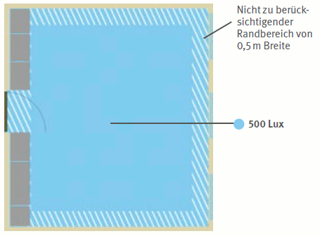
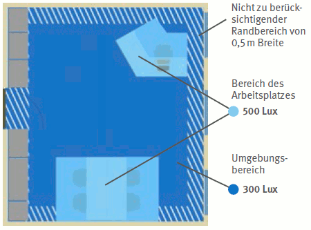
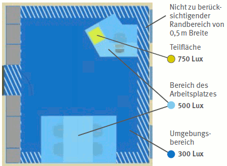
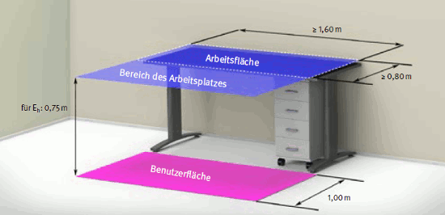
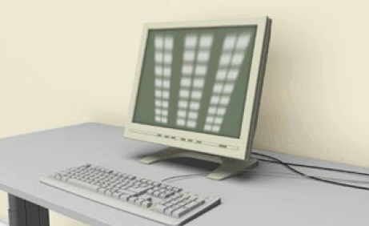
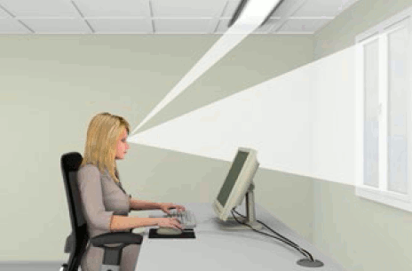
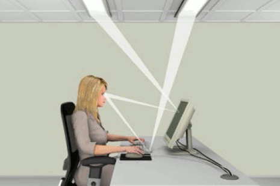
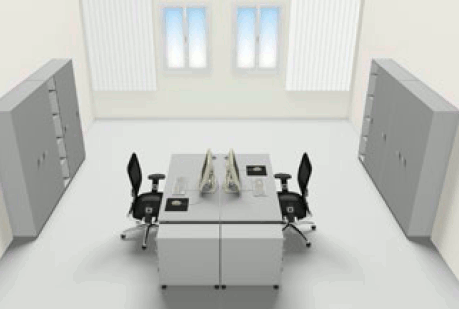
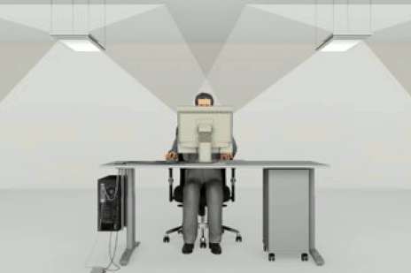

| Anhang der Arbeitsstättenverordnung Nr. 6.1 Ziffer 4 und 8 |
|
| (4) | Die Bildschirmgeräte sind so aufzustellen und zu betreiben, dass die Oberflächen frei von störenden Reflexionen und Blendungen sind. |
| (8) | Die Beleuchtung muss der Art der Arbeitsaufgabe entsprechen und an das Sehvermögen der Beschäftigten angepasst sein; ein angemessener Kontrast zwischen Bildschirm und Arbeitsumgebung ist zu gewährleisten. Durch die Gestaltung des Bildschirmarbeitsplatzes sowie der Auslegung und der Anordnung der Beleuchtung sind störende Blendungen, Reflexionen oder Spiegelungen auf dem Bildschirm und den sonstigen Arbeitsmitteln zu vermeiden. |
Die Qualität der Beleuchtung wirkt sich auf das visuelle Leistungsvermögen des Menschen aus. Sie ist entscheidend dafür, wie genau und wie schnell Details, Farben und Formen erkannt werden. Außerdem beeinflusst die Beleuchtung Aktivitätsniveau und Wohlbefinden der Beschäftigten. Durch schlechte Beleuchtung kann es zu visuellen Überbeanspruchungen kommen, die sich durch Kopfschmerzen, tränende und brennende Augen sowie Flimmern vor den Augen bemerkbar machen können. Bildschirm- und Büroarbeitsplätze müssen möglichst ausreichend Tageslicht erhalten. Büroräume sollen daher über genügend große, möglichst unverbaute (keine Objekte wie Gebäude oder Bäume unmittelbar vor dem Fenster, die den Lichteinfall verhindern) Fensterflächen verfügen. Die Fenster sollten so beschaffen und Arbeitsplätze so angeordnet sein, dass die Beschäftigten möglichst über eine ungehinderte und unverfälschte Sichtverbindung nach außen verfügen.
Eine Reihe von Merkmalen, die sich gegenseitig beeinflussen, bestimmt die Qualität der Beleuchtung. Um unter Berücksichtigung des Sehvermögens der Beschäftigten angemessene Lichtverhältnisse für die Sehaufgaben am Bildschirmarbeitsplatz zu erzielen, müssen die folgenden lichttechnischen Gütemerkmale beachtet werden:
Die Beleuchtung von Bildschirmarbeitsplätzen kann ausgeführt sein als (Abbildung 39):
Je nach Lichtverteilung der eingesetzten Leuchten unterscheidet man:
Neben der Einhaltung der lichttechnischen Gütemerkmale sind bei der Auswahl der Beleuchtung zum Beispiel die folgenden Aspekte wichtig:
Bildschirm- und Büroarbeitsplätze müssen möglichst ausreichend Tageslicht erhalten. Da Tageslicht örtlich und zeitlich nicht immer in ausreichendem Maße vorhanden ist, ist zusätzlich eine künstliche Beleuchtung erforderlich, die alle lichttechnischen Gütemerkmale erfüllt.
Ein ausreichendes Beleuchtungsniveau erfordert am Arbeitsplatz einen Mindestwert der Beleuchtungsstärke von 500 Lux. Diese Beleuchtungsstärke muss nicht für den gesamten Raum, sondern kann auch nur im Bereich des Arbeitsplatzes ausgeführt sein. Im übrigen Raumbereich, im Umgebungsbereich, ist ein Mindestwert der Beleuchtungsstärke von 300 Lux notwendig (Abbildung 39).
| Raumbezogene Beleuchtung  |
| Auf den Bereich des Arbeitsplatzes bezogene Beleuchtung  |
| Teilflächenbezogene Beleuchtung  |
Abb. 39 Beleuchtungskonzepte und Beleuchtungsstärken
Bei der teilflächenbezogenen Beleuchtung wird ein Mindestwert der Beleuchtungsstärke von 750 Lux auf einer Teilfläche von mindestens 600 mm x 600 mm im Bereich des Arbeitsplatzes – zum Beispiel durch eine Arbeitsplatzleuchte – erzeugt. Eine teilflächenbezogene Beleuchtung ist zu empfehlen, wenn es erforderlich ist, die Beleuchtung innerhalb des Bereiches des Arbeitsplatzes an unterschiedliche Tätigkeiten und Sehaufgaben oder an das individuelle Sehvermögen der Beschäftigten anzupassen.
Der Bereich des Arbeitsplatzes "Bildschirm- und Büroarbeit" setzt sich aus den projizierten Flächen der Arbeitsfläche und der Bewegungsfläche des Bildschirmarbeitsplatzes zusammen (Abbildung 40).

Abb. 40 Bereich des Arbeitsplatzes Bildschirm- und Büroarbeit
Das Beleuchtungsniveau wird neben den horizontalen Beleuchtungsstärken Eh auch von den zylindrischen und vertikalen Beleuchtungsstärken sowie deren Gleichmäßigkeit und ihrer Verteilung auf der jeweiligen Bewertungsfläche bestimmt.
Die geforderten Beleuchtungsstärken sind Mindestwerte. Werden diese Werte erreicht, muss die Beleuchtungsanlage gewartet werden. Die Beleuchtungsstärke geht im Verlaufe des Betriebes einer Beleuchtungsanlage aufgrund der Alterung beziehungsweise Verschmutzung von Lampen, Leuchten und des Raumes zurück. Daher muss bei der Planung der Beleuchtungsanlage von einem höheren mittleren Beleuchtungsstärkewert (Planungswert) ausgegangen und eine regelmäßige Wartung der Beleuchtungsanlage vorgesehen werden. Bei Beschädigungen muss die Beleuchtungsanlage instand gesetzt werden. Der Planungswert ergibt sich aus dem Wartungsfaktor, den der Lichtplaner unter Berücksichtigung des Alterungs- beziehungsweise Verschmutzungsverhaltens von Lampen, Leuchten und des Raumes festzulegen hat. Bei Fehlen von Daten für die spezifische Planung der Beleuchtungsanlage, aber auch für eine überschlägige Projektierung, sollte zum Beispiel für ein dreijähriges Wartungsintervall von einem Wartungsfaktor von 0,67 bei einer sauberen Raumatmosphäre ausgegangen werden (Tabelle 15).
| Empfohlene Wartungs- und Planungsfaktoren für ein 3-jähriges Wartungsintervall | |||
| Anwendungsbeispiel | Wartungsfaktor w | Planungsfaktor p | |
| Saubere Raumatmosphäre | 0,67 | 1,50* | |
| Starke Verschmutzung – zum Beispiel durch Rauchen | 0,50 | 2,00 | |
| Berechnungsbeispiele für den Planungswert der mittleren Beleuchtungsstärke w – Wartungsfaktor p – Planungsfaktor Ew – Wartungswert der mittleren Beleuchtungsstärke Ēp – Planungswert der mittleren Beleuchtungsstärke Ēp = p x Ēw Ep = 1 : w Bei einem Wartungswert der mittleren horizontalen Beleuchtungsstärke von zum Beispiel Ēw = 500 Lux ergibt sich für eine saubere Raumatmosphäre ein Planungswert der mittleren horizontalen Beleuchtungsstärke von 750 Lux.
* angenähert |
|||
Tabelle 15
Die Leuchtdichte ist die lichttechnische Kenngröße für die Helligkeit.
Neben der Beleuchtungsstärke beeinflusst die Farbgebung den Helligkeitseindruck eines Raumes oder einzelner Flächen.
Zur Erreichung einwandfreier Sehbedingungen ist ein ausgewogenes Leuchtdichteverhältnis im Gesichtsfeld erforderlich. Dies liegt vor, wenn ungefähr ein Verhältnis der Leuchtdichten
erreicht wird.
Zu geringe Leuchtdichteunterschiede sind zu vermeiden, da sie einen monotonen Raumeindruck bewirken.
Eine ausreichende Aufhellung der Raumbegrenzungsflächen wird erreicht, wenn durch entsprechende Farbgestaltung die Reflexionsgrade
liegen.
Für Arbeitsflächen müssen die Reflexionsgrade im Bereich von 0,15 bis 0,75 sowie Glanzgrade von matt bis seidenmatt (60°-Glanzwert ≤ 20) liegen. Für Einrichtungen und Geräte sollten diese Werte ebenfalls eingehalten werden.
Störende Direktblendung kann durch helle Flächen im Gesichtsfeld – zum Beispiel von Leuchten, Fenstern oder beleuchteten Flächen im Raum – auftreten und muss begrenzt werden. Die Bewertung der psychologischen Blendung durch Leuchten erfolgt durch das UGR-(Unified Glare Rating) Verfahren nach DIN EN 12464-1. In Räumen mit Bildschirm- und Büroarbeitsplätzen darf der UGR-Wert nicht größer als 19 sein, unabhängig vom Beleuchtungsniveau (Abbildung 43).
Auch Reflexionen (Spiegelungen) können zu störenden Blendungen führen. Diese sogenannte Reflexblendung entsteht durch Spiegelungen hoher Leuchtdichten auf glänzenden Flächen – zum Beispiel auf dem Bildschirm.
Reflexionen auf dem Bildschirm, hervorgerufen durch Fenster, Leuchten oder andere Flächen mit hohen Leuchtdichten, können durch Kontrastminderung die Qualität der Bildschirmanzeige verschlechtern (Abbildung 41). Bildschirme mit glänzenden Anzeigen sollten daher nicht für die Büroarbeit eingesetzt werden.

Abb. 41 Helle Flächen – zum Beispiel von Fenstern, Leuchten oder
anderen Flächen mit hohen Leuchtdichten, die sich im Bildschirm spiegeln
Reflexblendung auf den anderen Arbeitsmitteln wird vermieden, wenn die empfohlenen Glanzgrade eingehalten werden. Darüber hinaus sollte darauf geachtet werden, dass Papierdokumente und Prospekthüllen matt sind.

Abb. 42 Direktblendung durch zu große Helligkeitsunterschiede im
Blickfeld – zum Beispiel durch Fenster
Außerdem können die Beleuchtungsart und eine entsprechende Anordnung der Leuchten dazu beitragen, Reflexblendung zu vermeiden. So sollten zum Beispiel nach unten offene Leuchten, bei denen die Lampen einsehbar sind, nicht direkt über dem Arbeitsplatz, insbesondere über den Beschäftigten angeordnet werden.

Abb. 43 Reflexblendung durch Reflexionen heller Leuchten auf dem Bildschirm
auf dem Bildschirm
Um eine Blendung durch Tageslicht weitgehend zu vermeiden, sollen die Arbeitsplätze möglichst mit einer zur Hauptfensterfront parallelen Blickrichtung angeordnet sein (Abbildung 44). Eine Aufstellung von Bildschirmen vor den Fenstern kann durch große Leuchtdichteunterschiede zwischen Bildschirm und Arbeitsumgebung zur Direktblendung führen. (Abbildung 42)

Abb. 44 Richtige Ausrichtung der Bildschirmarbeitsplätze zum
Fenster
Nahe gelegene Fenster im Rücken der Benutzer können sich im Bildschirm spiegeln und zu Reflexblendung führen. Weiterhin müssen sowohl zur Begrenzung der Direkt- als auch der Reflexblendung am Bildschirm durch Tageslicht sowie zur Begrenzung zu hoher Beleuchtungsstärken am Bildschirm durch Tageslicht geeignete, verstellbare Licht- beziehungsweise Sonnenschutzvorrichtungen an den Fenstern angebracht sein.
Ebenso sollen hohe Leuchtdichten an Fensterflächen durch geeignete Sonnenschutzvorrichtungen vermieden werden.
Am Arbeitsplatz ist eine ausgewogene Schattigkeit anzustreben. Die Beleuchtung soll nicht zu schattenarm sein, da sonst die räumliche Wahrnehmung beeinträchtigt wird. Andererseits ist auch stark gerichtetes Licht, das scharfe sowie lange Schatten bewirkt, zu vermeiden.
Deshalb sollten die Leuchten das Licht breitstrahlend abgeben. Es wird eine Direkt-/Indirektbeleuchtung (Abbildung 45) empfohlen. Für Arbeitsplätze mit besonderen Bedingungen sollten Leuchten mit geeigneten Lichtstärkeverteilungen ausgewählt werden.

Abb. 45 Beispiel für Direkt-/Indirektbeleuchtung
Für die Beleuchtung von Bildschirmarbeitsplätzen sollte die Lichtfarbe der Lampen entsprechend der Wirkung ausgewählt werden, die im Raum erzielt werden soll. Warmweiße Lampen erzeugen eine etwas wohnlichere, neutralweiße eine sachlichere Stimmung. Tageslichtweiße Lampen können zu einem fahl wirkenden Licht führen, wenn die Beleuchtungsstärke nicht angehoben wird.
Um eine gute Farbwiedergabe zu erreichen, ist darauf zu achten, dass die Lampen mindestens den Farbwiedergabeindex Ra = 80 aufweisen.
Bei künstlicher Beleuchtung können störende Flimmererscheinungen auftreten, die zu Sehstörungen und Ermüdungen führen. Dies wird durch den Einsatz von elektronischen Vorschaltgeräten verhindert.
Weitere Literatur
|
Die Überprüfung der Reflexions-und Glanzgrade kann überschlägig mithilfe von Reflexionsgradtafeln und Glanzgradtafeln erfolgen.
| Bezugsquelle der Glanzgradtafeln: Institut für Lackprüfung, Andreas Keiner GmbH Felsweg 10, D-35435 Wettenberg Telefon: 0641 86-188, Telefax: 0641 86-387 E-Mail: info@ilak.eu |
Bezugsquelle der Reflexionsgradtafel: ecomed Sicherheit, Justus-von-Liebig-Str.1, D-86899 Landsberg Telefon: 08191 125-0, Telefax: 08191-125-526 E-Mail: info@ecomed.de |